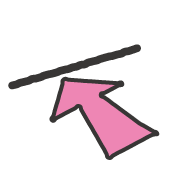

ad-
(〜の方へ、〜の方を)
接頭辞adは英語の前置詞toに相当するラテン語に由来し、「方向」や「対象」を表します。また、obはある対象物に向かってぶつかるイメージを持つ接頭辞です。obはc,f,g,pの前で、oc,of,og,opになります。
ad (〜の方へ) + vent (行く) + ure (状態を表す名詞)
➡︎ 何かに向かって進んで行くこと
冒険
語源メモ
「投機的事業」は「ベンチャービジネス(venture business)」だが、このventureは、「冒険」を意味するadbentureのadが消失して生まれた語である。